감정평가사-1차-2교시 (2022-04-02 기출문제)
1과목: 감정평가관계법규
1. 국토의 계획 및 이용에 관한 법령상 국토교통부장관이 도시 • 군관리계획의 수립 기준을 정할 때 고려하여야 하는 사항이 아닌 것은?
- 공간구조는 생활권단위로 적정하게 구분하고 생활권별로 생활 • 편익시설이 고루 갖추어지도록 할 것
- 녹지축 • 생태계 • 산림 • 경관 등 양호한 자연환경과 우량농지, 문화재 및 역사문화환경 등을 고려하여 토지이용계획을 수립하도록 할 것
- 수도권안의 인구집중유발시설이 수도권외의 지역으로 이전하는 경우 종전의 대지에 대하여는 그 시설의 지방이전이 촉진될 수 있도록 토지이용계획을 수립하도록 할 것
- 도시의 개발 또는 기반시설의 설치 등이 환경에 미치는 영향을 미리 검토하는 등 계획과 환경의 유기적 연관성을 높여 건전하고 지속가능한 도시발전을 도모하도록 할 것
- 광역계획권의 미래상과 이를 실현할 수 있는 체계화된 전략을 제시하고 국토종합계획등과 서로 연계되도록 할 것
(정답률: 알수없음)

2. 국토의 계획 및 이용에 관한 법령상 개발행위에 따른 공공시설등의 귀속에 관한 설명으로 옳지 않은 것은?
- 개발행위허가를 받은 자가 행정청인 경우 개발행위허가를 받은 자가 새로 공공시설을 설치한 경우 새로 설치된 공공시설은 그 시설을 관리할 관리청에 무상으로 귀속된다.
- 개발행위허가를 받은 자가 행정청인 경우 개발행위허가를 받은 자가 기존의 공공시설에 대체되는 공공시설을 설치한 경우 종래의 공공시설은 개발행위허가를 받은 자에게 무상으로 귀속된다.
- 개발행위허가를 받은 자가 행정청이 아닌 경우 개발행위허가를 받은 자가 새로 설치한 공공시설은 그 시설을 관리할 관리청에 무상으로 귀속된다.
- 개발행위허가를 받은 자가 행정청이 아닌 경우 개발행위로 용도가 폐지되는 공공시설은 개발행위허가를 받은 자에게 무상으로 귀속된다.
- 특별시장 • 광역시장 • 특별자치시장 • 특별자치도지사 • 시장 또는 군수는 공공시설의 귀속에 관한 사항이 포함된 개발행위허가를 하려면 미리 관리청의 의견을 들어야 한다.
(정답률: 알수없음)
3. 국토의 계획 및 이용에 관한 법령상 공동구협의회의 심의를 거쳐야 공동구에 수용할 수 있는 시설은?
- 가스관
- 통신선로
- 열수송관
- 중수도관
- 쓰레기수송관
(정답률: 알수없음)
4. 「국토의 계획 및 이용에 관한 법률 」은 중앙도시계획위원회와 지방도시계획위원회의 심의를 거치지 아니하고 개발행위의 허가를 하는 경우를 규정하고 있다. 이에 해당하는 개발행위를 모두 고른 것은?
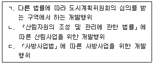
- ㄱ
- ㄴ
- ㄱ, ㄷ
- ㄴ, ㄷ
- ㄱ, ㄴ, ㄷ
(정답률: 알수없음)
5. 국토의 계획 및 이용에 관한 법령상 성장관리계획구역을 지정할 수 있는 지역이 아닌 것은? (단, 조례는 고려하지 않음)
- 개발수요가 많아 무질서한 개발이 진행되고 있거나 진행될 것으로 예상되는 지역
- 기반시설이 부족할 것으로 예상되나 기반시설을 설치하기 곤란한 지역을 대상으로 건폐율이나 용적률을 강화하여 적용하기 위한 지역
- 「토지이용규제 기본법」제2조제1호에 따른 지역 • 지구등의 변경으로 토지이용에 대한 행위제한이 완화되는 지역
- 주변의 토지이용이나 교통여건 변화 등으로 향후 시가화가 예상되는 지역
- 주변지역과 연계하여 체계적인 관리가 필요한 지역
(정답률: 알수없음)
6. 국토의 계획 및 이용에 관한 법령상 용도지역 안에서의 용적률 범위에 관한 조문의 일부이다. ( )에 들어갈 내용으로 옳은 것은?
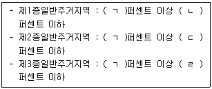
- ㄱ: 50, ㄴ: 100, ㄷ: 150, ㄹ: 200
- ㄱ: 50, ㄴ: 200, ㄷ: 250, ㄹ: 300
- ㄱ: 100, ㄴ: 200, ㄷ: 250, ㄹ: 300
- ㄱ: 100, ㄴ: 250, ㄷ: 300, ㄹ: 350
- ㄱ: 200, ㄴ: 250, ㄷ: 300, ㄹ: 350
(정답률: 알수없음)
7. 국토의 계획 및 이용에 관한 법령상 도시지역, 관리지역, 농림지역 또는 자연환경 보전지역으로 용도가 지정되지 아니한 지역에 대하여 건폐율의 최대한도를 정할 때에는 ( )에 관한 규정을 적용한다. ( )에 해당하는 것은?
- 도시지역
- 관리지역
- 농림지역
- 자연환경보전지역
- 녹지지역
(정답률: 알수없음)
8. 국토의 계획 및 이용에 관한 법령상 도시 • 군관리계획에 해당하지 않는 것은?
- 시 또는 군의 관할 구역에 대하여 기본적인 공간구조와 장기발전방향을 제시하는 종합계 획
- 용도지역 • 용도지구의 지정에 관한 계획
- 지구단위계획구역의 지정에 관한 계획
- 입지규제최소구역의 지정에 관한 계획
- 기반시설의 설치 • 정비 또는 개량에 관한 계획
(정답률: 알수없음)
9. 국토의 계획 및 이용에 관한 법령상 A군수가 민간건설업자 B에 대해 개발행위허가를 할 때, 토석을 운반하는 차량통행으로 통행로 주변환경이 오염될 우려가 있어 환경오염방지의 이행 보증 등에 관한 조치를 명하는 경우이다. 그에 관한 설명으로 옳은 것은?
- B가 예치하는 이행보증금은 총공사비의 30퍼센트 이상이 되도록 해야 한다.
- B가 준공검사를 받은 때에는 A군수는 즉시 이행보증금을 반환하여야 한다.
- A군수는 이행보증금을 행정대집행의 비용으로 사용할 수 없다.
- B가 산지에서 개발행위를 하는 경우 이행보증금의 예치금액의 기준이 되는 총공사비에는「산지관리법」에 따른 복구비는 포함되지 않는다.
- B가 민간건설업자가 아닌 국가인 경우라도 민간건설업자의 경우와 동일한 이행보증이 필요하다.
(정답률: 알수없음)
10. 국토의 계획 및 이용에 관한 법령상 도시 • 군계획시설결정의 실효에 관한 조문의 일부이다. ( )에 들어갈 내용으로 옳은 것은?
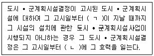
- ㄱ: 10년, ㄴ: 10년이 되는 날
- ㄱ: 10년, ㄴ: 10년이 되는 날의 다음날
- ㄱ: 20년, ㄴ: 20년이 되는 날
- ㄱ: 20년, ㄴ: 20년이 되는 날의 다음날
- ㄱ: 30년, ㄴ: 30년이 되는 날
(정답률: 알수없음)
11. 국토의 계획 및 이용에 관한 법령상 광역도시계획의 수립에 관한 설명으로 옳지 않은 것은?
- 국토교통부장관은 시 • 도지사가 요청하는 경우 관할 시 • 도지사와 공동으로 광역도시계획을 수립할 수 있다.
- 시 • 도지사가 광역도시계획을 수립하는 경우 미리 공청회를 열어 주민과 관계 전문가 등으로부터 의견을 들어야 한다.
- 국토교통부장관은 관계 행정기관의 장에게 광역도시계획의 수립을 위한 기초조사에 필요한 자료를 제출하도록 요청할 수 있다.
- 시 • 도지사가 광역도시계획을 수립하는 경우 미리 관계 중앙행정기관과 협의한 후 중앙도시계획위원회의 심의를 거쳐야 한다.
- 시 . 도지사가 광역도시계획의 승인을 받으려는 때에는 광역도시계획안에 기초조사 결과를 포함한 서류를 첨부하여 국토교통부장관에게 제출해야 한다.
(정답률: 알수없음)
12. 국토의 계획 및 이용에 관한 법령상 기반시설부담구역에 설치가 필요한 기반시설에 해당하지 않는 것은? (단, 조례는 고려하지 않음)
- 도로(인근의 간선도로로부터 기반시설부담구역까지의 진입도로를 포함)
- 공원
- 학교(「고등교육법」에 따른 학교를 포함)
- 수도(인근의 수도로부터 기반시설부담구역까지 연결하는 수도를 포함)
- 하수도(인근의 하수도로부터 기반시설부담구역까지 연결하는 하수도를 포함)
(정답률: 알수없음)
13. 국토의 계획 및 이용에 관한 법령상 기반시설 중 공공 • 문화체육시설에 해당하지 않는 것은?
- 연구시설
- 사회복지시설
- 공공직업훈련시설
- 방송•통신시설
- 청소년수련시설
(정답률: 알수없음)
14. 감정평가 및 감정평가사에 관한 법령상 감정평가법인등이 토지를 감정평가하는 경우 해당 토지의 임대료, 조성비용 등을 고려하여 감정평가를 할 수 있는 경우가 아닌 것은?
- 보험회사의 의뢰에 따른 감정평가
- 신탁회사의 의뢰에 따른 감정평가
- 「자산재평가법」에 따른 감정평가
- 법원에 계속 중인 소송을 위한 감정평가 중 보상과 관련된 감정평가
- 금융기관의 의뢰에 따른 감정평가
(정답률: 알수없음)
15. 감정평가 및 감정평가사에 관한 법령상 감정평가에 관한 설명으로 옳지 않은 것은?
- 금융기관이 대출과 관련하여 토지등의 감정평가를 하려는 경우에는 감정평가법인등에 의뢰하여야 한다.
- 감정평가법인등이 해산하거나 폐업하는 경우 시 • 도지사는 감정평가서의 원본을 발급일부터 5년 동안 보관해야 한다.
- 국토교통부장관은 감정평가서가 발급된 후 해당 감정평가가 법률에서 정하는 절차와 방법 등에 따라 타당하게 이루어졌는지를 직권으로 조사할 수 있다.
- 최근 3년 이내에 실시한 감정평가 타당성조사 결과 감정평가의 부실이 발생한 분야에 대해서는 우선추출방식의 표본조사가 실시될 수 있다.
- 감정평가서에 대한 표본조사는 무작위추출방식으로도 할 수 있다.
(정답률: 알수없음)
16. 감정평가 및 감정평가사에 관한 법령상 감정평가법인등에 관한 설명으로 옳지 않은 것은?
- 부정한 방법으로 감정평가사의 자격을 받았다는 사유로 감정평가사 자격이 취소된 후 1년이 경과되지 아니한 사람은 감정평가법인등의 사무직원이 될 수 없다.
- 감정평가법인은 국토교통부장관의 허가를 받아 토지등의 매매업을 직접 할 수 있다.
- 감정평가법인등이나 그 사무직원은 업무수행에 따른 수수료와 실비 외에는 어떠한 명목으로도 그 업무와 관련된 대가를 받아서는 아니 된다.
- 감정평가사가 고의 또는 중대한 과실 없이 감정평가서의 적정성을 잘못 심사한 것은 징계사유가 아니다.
- 한국감정평가사협회는 감정평가를 의뢰하려는 자가 해당 감정평가사에 대한 징계 사실 을 확인하기 위하여 징계 정보의 열람을 신청하는 경우에는 그 정보를 제공하여야 한다.
(정답률: 알수없음)
17. 6월 10일자로 「건 축 법 」에 따른 대수선이 된 단독주택에 대하여 부동산 가격 공시에 관한 법령에 따라 개별주택가격을 결정 • 공시하는 경우 공시기준일은?
- 그해 1월 1일
- 그해 6월 1일
- 그 해 7월 1일
- 그 해 10월 1일
- 다음 해 1월 1일
(정답률: 알수없음)
18. 부동산 가격공시에 관한 법령상 개별공시지가에 관한 설명으로 옳지 않은 것은?
- 표준지로 선정된 토지에 대하여는 개별공시지가를 결정 • 공시하지 아니할 수 있다.
- 개별토지 가격 산정의 타당성에 대한 감정평가법인등의 검증을 생략하려는 경우 개발사업이 시행되는 토지는 검증 생략 대상 토지로 선정해서는 안 된다.
- 개별토지 가격 산정의 타당성 검증을 의뢰할 감정평가법인등을 선정할 때 선정기준일부터 직전 1년간 과태료처분을 2회 받은 감정평가법인등은 선정에서 배제된다.
- 개별공시지가 조사 • 산정의 기준에는 토지가격비준표의 사용에 관한 사항이 포함되어야 한다.
- 개별공시지가에 이의가 있는 자는 그 결정 • 공시일부터 3 0일 이내에 서면으로 시장 • 군수 또는 구청장에게 이의를 신청할 수 있다.
(정답률: 알수없음)
19. 부동산 가격공시에 관한 법령상 표준지공시지가에 관한 설명으로 옳은 것을 모두 고른 것은?
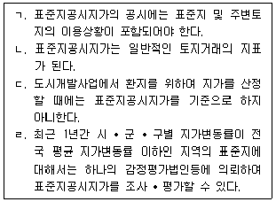
- ㄱ, ㄴ
- ㄱ, ㄷ
- ㄱ, ㄴ, ㄹ
- ㄴ, ㄷ, ㄹ
- ㄱ, ㄴ, ㄷ, ㄹ
(정답률: 알수없음)
20. 국유재산법령상 국유재산에 관한 설명으로 옳은 것은?
- 국가가 직접 사무용 • 사업용으로 사용하는 재산은 공공용재산이다.
- 총괄청은 일반재산을 보존용재산으로 전환하여 관리할 수 있다.
- 중앙관서의 장등이 필요하다고 인정하는 경우에는 보존용재산에 사권을 설정할 수 있다.
- 공용재산은 시효취득의 대상이 될 수 있다.
- 영농을 목적으로 하는 토지와 그 정착물의 대부기간은 20년 이내로 한다.
(정답률: 알수없음)
21. 국유재산법령상 행정재산에 관한 설명으로 옳은 것은?
- 중앙관서의 장은 사용허가한 행정재산을 지방자치단체가 직접 공용으로 사용하기 위하여 필요하게 된 경우에도 그 허가를 철회할 수 없다.
- 행정재산의 관리위탁을 받은 자가 그 재산의 일부를 사용 • 수익하는 경우에는 미리 해당 중앙관서의 장의 승인을 받아야 한다.
- 경작용으로 실경작자에게 행정재산의 사용허가를 하려는 경우에는 일반경쟁에 부쳐야 한다.
- 수의의 방법으로 한 사용허가는 허가기간이 끝난 후 갱신할 수 없다.
- 행정재산의 사용허가를 한 날부터 3년 내에는 사용료를 조정할 수 없다.
(정답률: 알수없음)
22. 국유재산법령상 일반재산의 처분가격에 관한 설명으로 옳은 것은?
- 증권을 처분할 때에는 시가를 고려하여 예정가격을 결정하여야 한다.
- 공공기관에 일반재산을 처분하는 경우에는 두 개의 감정평가법인등의 평가액을 산술평균한 금액을 예정가격으로 하여야 한다.
- 감정평가법인등의 평가액은 평가일부터 2년까지 적용할 수 있다.
- 국가가 보존 • 활용할 필요가 없고 대부 • 매각이나 교환이 곤란하여 일반재산을 양여하는 경우에는 대장가격을 재산가격으로 한다.
- 일단(一團)의 토지 대장가격이 3천만원 이하인 국유지를 경쟁입찰의 방법으로 처분하는 경우에는 해당 국유지의 개별공시지가를 예정가격으로 할 수 있다.
(정답률: 알수없음)
23. 국유재산법령상 지식재산에 관한 설명으로 옳지 않은 것은?
- 「식물신품종 보호법」에 따른 품종보호권은 지식재산에 해당한다.
- 지식재산을 대부 받은 자는 해당 중앙관서의 장등의 승인을 받아 그 지식재산을 다른 사람에게 사용 • 수익하게 할 수 있다.
- 상표권의 사용료를 면제하는 경우 그 면제기간은 5년 이내로 한다.
- 저작권등의 사용허가를 받은 자는 해당 지식재산을 관리하는 중앙관서의 장등의 승인을 받아 그 저작물의 개작을 할 수 있다.
- 지식재산의 사용허가등의 기간을 연장하는 경우 최초의 사용허가등의 기간과 연장된 사용허가등의 기간을 합산한 기간은 5년을 초과하지 못한다.
(정답률: 알수없음)
24. 건축법상 용어의 정의에 관한 조문의 일부이다. ( )에 들어갈 내용으로 옳은 것은?
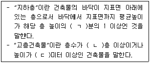
- ㄱ: 2, ㄴ: 20, ㄷ: 100
- ㄱ: 2, ㄴ: 20, ㄷ: 120
- ㄱ: 2, ㄴ: 30, ㄷ: 120
- ㄱ: 3, ㄴ: 20, ㄷ: 100
- ㄱ: 3, ㄴ: 30, ㄷ: 120
(정답률: 알수없음)
25. 건축법령상 안전영향평가에 관한 설명으로 옳지 않은 것은?
- 허가권자는 초고층 건축물에 대하여 건축허가를 하기 전에 안전영향평가를 안전영향 평가기관에 의뢰하여 실시하여야 한다.
- 안전영향평가는 건축물의 구조, 지반 및 풍환경(風環境) 등이 건축물의 구조안전과 인접 대지의 안전에 미치는 영향 등을 평가하는 것이다.
- 안전영향평가 결과는 건축위원회의 심의를 거쳐 확정한다.
- 안전영향평가의 대상에는 하나의 건축물이 연면적 10만 제곱미터 이상이면서 16층 이상인 경우도 포함된다.
- 안전영향평가를 실시하여야 하는 건축물이 다른 법률에 따라 구조안전과 인접 대지의 안전에 미치는 영향 등을 평가 받은 경우에는 안전영향평가의 모든 항목을 평가 받은 것으로 본다.
(정답률: 알수없음)
26. 건축법령상 건축물의 용도에 따른 건축허가의 승인에 관한 설명이다. ( )에 해당하는 건축물이 아닌 것은?
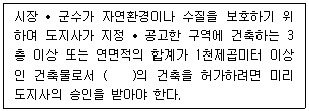
- 공동주택
- 제2종 근린생활시설(일반음식점만 해당한다)
- 업무시설(일반업무시설은 제외한다)
- 숙박시설
- 위락시설
(정답률: 알수없음)
27. 건축법령상 공개공지등에 관한 설명으로 옳지 않은 것은? (단, 조례는 고려하지 않음)
- 공개공지등은 해당 지역의 환경을 쾌적하게 조성하기 위하여 일반이 사용할 수 있도록 설치하는 소규모 휴식시설 등의 공개 공지 또는 공개 공간을 지칭한다.
- 공개공지등은 상업지역에도 설치할 수 있다.
- 공개 공지는 필로티의 구조로 설치할 수 있다.
- 숙박시설로서 해당 용도로 쓰는 바닥면적의 합계가 3천 제곱미터인 건축물의 대지에는 공개 공지 또는 공개 공간을 설치하여야 한다.
- 판매시설 중「농수산물 유통 및 가격안정에 관한 법률」에 따른 농수산물유통시설에는 공개공지등을 설치하지 않아도 된다.
(정답률: 알수없음)
28. 공간정보의 구축 및 관리 등에 관한 법령상 토지와 지목이 옳게 연결된 것은?
- 묘지의 관리를 위한 건축물의 부지 - 묘지
- 원상회복을 조건으로 흙을 파는 곳으로 허가된 토지 - 잡종지
- 학교의 교사(校舍)와 이에 접속된 체육장 등 부속시설물의 부지 - 학교용지
- 자동차 판매 목적으로 설치된 야외전시장의 부지 - 주차장
- 자연의 유수가 있을 것으로 예상되는 소규모 수로부지 - 하천
(정답률: 알수없음)
29. 공간정보의 구축 및 관리 등에 관한 법령상 토지소유자가 지적소관청에 토지의 합병을 신청할 수 없는 경우를 모두 고른 것은?
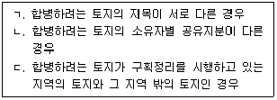
- ㄱ
- ㄷ
- ㄱ, ㄴ
- ㄴ, ㄷ
- ㄱ, ㄴ, ㄷ
(정답률: 알수없음)
30. 공간정보의 구축 및 관리 등에 관한 법령상 토지대장의 등록사항 중 이를 변경하는 것이 토지의 이동(異動)에 해당하지 않는 것은?
- 지번
- 지목
- 면적
- 토지의 소재
- 소유자의 주소
(정답률: 알수없음)
31. 공간정보의 구축 및 관리 등에 관한 법령상 토지대장에 등록하는 토지의 소유자가 둘 이상인 경우 공유지연명부에 등록하여야 하는 사항이 아닌 것은?
- 소유권 지분
- 토지의 고유번호
- 지적도면의 번호
- 필지별 공유지연명부의 장번호
- 토지소유자가 변경된 날과 그 원인
(정답률: 알수없음)
32. 부동산등기법령상 등기관이 건물 등기기록의 표제부에 기록하여야 하는 사항 중 같은 지번 위에 여러개의 건물이 있는 경우와 구분건물의 경우에 한정하여 기록하여야 하는 것은?
- 건물의 종류
- 건물의 구조
- 건물의 면적
- 표시번호
- 도면의 번호
(정답률: 알수없음)
33. 부동산등기법령상 등기신청 및 등기의 효력발생시기에 관한 설명으로 옳은 것을 모두 고른 것은?
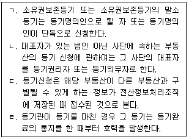
- ㄱ, ㄴ
- ㄱ, ㄷ
- ㄷ, ㄹ
- ㄴ, ㄷ, ㄹ
- ㄱ, ㄴ, ㄷ, ㄹ
(정답률: 알수없음)
34. 부동산등기법령상 부기로 하여야 하는 등기가 아닌 것은?
- 소유권 외의 권리의 이전등기
- 소유권 외의 권리에 대한 처분제한 등기
- 소유권 외의 권리를 목적으로 하는 권리에 관한 등기
- 전체가 말소된 등기에 대한 회복등기
- 등기명의인표시의 변경이나 경정의 등기
(정답률: 알수없음)
35. 부동산등기법령상 A(용익권 또는 담보권)와 B(등기원인에 그 약정이 있는 경우에만 기록하여야 하는 사항)의 연결로 옳지 않은 것은?
- A：지역권, B：범위
- A：전세권, B：존속기간
- A：저당권, B：변제기
- A：근저당권, B：존속기간
- A：지상권, B：지료와 지급시기
(정답률: 알수없음)
36. 동산 · 채권 등의 담보에 관한 법령상 등산담보권에 관한 설명으로 옳지 않은 것은?
- 담보목적물의 훼손으로 인하여 담보권설정자가 받을 금전에 대하여 등산담보권을 행사하려면 그 지급 전에 압류하여야 한다.
- 담보권자가 담보목적물을 점유한 경우에는 피담보채권을 전부 변제받을 때까지 담보목적물을 유치할 수 있지만, 선순위권리자에게는 대항하지 못한다.
- 동산담보권을 그 담보할 채무의 최고액만을 정하고 채무의 확정을 장래에 보류하여 설정하는 경우 채무의 이자는 최고액 중에 포함되지 아니한다.
- 약정에 따른 동산담보권의 득실변경은 담보등기부에 등기를 하여야 그 효력이 생긴다.
- 동일한 동산에 관하여 담보등기부의 등기와「민법』에 규정된 점유개정이 행하여진 경우에 그에 따른 권리 사이의 순위는 법률에 다른 규정이 없으면 그 선후에 따른다.
(정답률: 알수없음)
37. 도시 및 주거환경정비법령상 정비구역에서 허가를 받아야 하는 행위와 그 구체적 내용을 옳게 연결한 것은? (단, 「국토의 계획 및 이용에 관한 법률」에 따른 개발행위허가의 대상이 아닌 것을 전제로 함)
- 건축물의 건축 등:「건축법』제2조제1항제2호에 따른 건축물(가설건축물을 포함한다)의 건축, 용도변경
- 공작물의 설치: 농림수산물의 생산에 직접 이용되는 것으로서 국토교통부령으로 정하는 간이공작물의 설치
- 토석의 채취 : 정비구역의 개발에 지장을 주지 아니하고 자연경관을 손상하지 아니하는 범위에서의 토석의 채취
- 물건을 쌓아놓는 행위: 정비구역에 존치하기로 결정된 대지에 물건을 쌓아놓는 행위
- 죽목의 벌채 및 식재: 관상용 죽목의 임시식재(경작지에서의 임시식재는 제외한다)
(정답률: 알수없음)
38. 도시 및 주거환경정비법령상 시장 • 군수등이 직접 정비사업을 시행하거나 토지주택공사등을 사업시행자로 지정하여 정비사업을 시행하게 할 수 있는 경우에 해당하지 않는 것은?
- 천재지변으로 긴급하게 정비사업을 시행할 필요가 있다고 인정하는 때
- 재건축조합이 사업시행 예정일부터 2년 이내에 사업시행계획인가를 신청하지 아니한 때
- 조합설립추진위원회가 시장 • 군수등의 구성승인을 받은 날부터 3년 이내에 조합설립인가를 신청하지 아니한 때
- 지방자치단체의 장이 시행하는「국토의 계획 및 이용에 관한 법률」에 따른 도시 • 군계획사업과 병행하여 정비사업을 시행할 필요가 있다고 인정하는 때
- 해당 정비구역의 국 • 공유지 면적 또는 국 • 공유지와 토지주택공사등이 소유한 토지를 합한 면적이 전체 토지면적의 2분의 1 이상으로서 토지등소유자의 과반수가 시장 • 군수등 또는 토지주택공사등을 사업시행자로 지정하는 것에 동의하는 때
(정답률: 알수없음)
39. 도시 및 주거환경정비법령상 관리처분계획에 포함되어야 할 사항에 해당하지 않는 것은? (단, 조례는 고려하지 않음)
- 분양대상자별 분양예정인 대지 또는 건축물의 추산액(임대관리 위탁주택에 관한 내용을 포함한다)
- 정비사업비의 추산액(재건축사업의 경우에는「재건축초과이익 환수에 관한 법률」에 따른 재건축부담금에 관한 사항을 포함하지 아니한다) 및 그에 따른 조합원 분담규모 및 분담시기
- 분양대상자의 종전 토지 또는 건축물에 관한 소유권 외의 권리명세
- 세입자별 손실보상을 위한 권리명세 및 그 평가액
- 정비사업의 시행으로 인하여 새롭게 설치되는 정비기반시설의 명세와 용도가 폐지되는 정비기반시설의 명세
(정답률: 알수없음)
40. 도시 및 주거환경정비법령상 도시 • 주거환경정비기본계획에 포함되어야 할 사항을 모두 고른 것은?
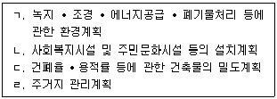
- ㄱ
- ㄱ, ㄴ
- ㄷ, ㄹ
- ㄴ, ㄷ, ㄹ
- ㄱ, ㄴ, ㄷ, ㄹ
(정답률: 알수없음)
2과목: 회계학
41. (주)감평이 총계정원장 상 당좌예금 잔액과 은행측 당좌예금잔액증명서의 불일치 원인을 조사한 결과 다음과 같은 사항을 발견하였다. 이 때 (주)감평이 장부에 반영해야 할 항목을 모두 고른 것은?
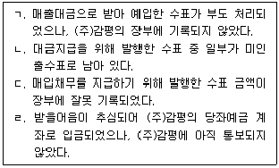
- ㄴ
- ㄱ, ㄴ
- ㄴ, ㄷ
- ㄱ, ㄷ, ㄹ
- ㄴ, ㄷ, ㄹ
(정답률: 알수없음)
42. (주)감평은 20x1년 초 현금 \2,000을 출자받아 설립되었으며, 이 금액은 (주)감평이 판매할 재고자산 200개를 구입할 수 있는 금액이다. 20x1년 말 자본은 \3,000이고 20x1년도 자본거래는 없었다. 20x1년 말 (주)감평이 판매하는 재고자산의 개당 구입가격은 \12이고, 20x1년 말 물가지수는 20x1년 초 100에 비하여 10% 상승하였다. 실물자본유지개념을 적용할 경우 20x1년도 이익은?
- \200
- \400
- \600
- \800
- \1,000
(정답률: 알수없음)
43. (주)감평의 현재 유동비율과 당좌비율은 각각 200%, 150%이다. 유동비율과 당좌비율을 모두 증가시킬 수 있는 거래는? (단, 모든 거래는 독립적이다.)
- 상품 \10,000을 외상으로 매입하였다.
- 영업용 차량운반구를 취득하면서 현금 \13,000을 지급하였다.
- 매출채권 \12,000을 현금으로 회수하였다.
- 장기차입금 \15,000을 현금으로 상환하였다.
- 사용 중인 건물을 담보로 은행에서 현금 \30,000을 장기 차입하였다.
(정답률: 알수없음)
44. (주)감평은 20x1년 초 임대목적으로 건물(취득원가 \1,000, 내용연수 10년, 잔존가치 \0, 정액법 감가상각)을 취득하여 이를 투자부동산으로 분류하였다. 20x1년 말 건물의 공정가치가 \930일 때 (A)공정가치모형과 (B)원가모형을 각각 적용할 경우 (주)감평의 20x1 년도 당기순이익에 미치는 영향은? (단, 해당 건물은 매각예정으로 분류되어 있지 않다.)
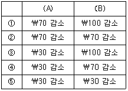
- ①
- ②
- ③
- ④
- ⑤
(정답률: 알수없음)
45. 재무제표 요소의 측정기준에 관한 설명으로 옳은 것은?
- 공정가치는 측정일 현재 동등한 자산의 원가로서 측정일에 지급할 대가와 그 날에 발생할 거래원가를 포함한다.
- 현행원가는 자산을 취득 또는 창출할 때 발생한 원가의 가치로서 자산을 취득 또는 창출하기 위하여 지급한 대가와 거래원가를 포함한다.
- 사용가치는 기업이 자산의 사용과 궁극적인 처분으로 얻을 것으로 기대하는 현금흐름 또는 그 밖의 경제적효익의 현재가치이다.
- 이행가치는 측정일에 시장참여자 사이의 정상거래에서 부채를 이전할 때 지급하게 될 가격이다.
- 역사적 원가는 측정일 현재 자산의 취득 또는 창출을 위해 이전해야 하는 현금이나 그 밖의 경제적 자원의 현재가치이다.
(정답률: 알수없음)
46. (주)감평의 20x1년 기말 재고자산 자료가 다음과 같다.
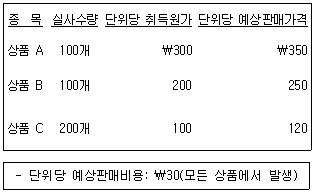
상품 B의 70%는 확정판매계약(취소불능계약)을 이행하기 위하여 보유하고 있으며, 상품 B의 단위당 확정판매계약가격은 \220이다. 재고자산 평가와 관련하여 20x1년 인식할 당기손익은? (단, 재고자산의 감모는 발생하지 않았으며, 기초 재고자산평가충당금은 없다.)
- 손실 \2,700
- 손실 \700
- \0
- 이익 \2,200
- 이익 \3,200
(정답률: 알수없음)
47. 재무제표 요소에 관한 설명으로 옳지 않은 것은?
- 자산은 과거사건의 결과로 기업이 통제하는 현재의 경제적자원이다.
- 부채는 과거사건의 결과로 기업이 경제적자원을 이전해야 하는 현재의무이다.
- 수익은 자본청구권 보유자로부터의 출자를 포함하며, 자본청구권 보유자에 대한 분배는 비용으로 인식한다.
- 기업이 발행한 후 재매입하여 보유하고 있는 채무상품이나 지분상품은 기업의 경제적 자원이 아니다.
- 자본청구권은 기업의 자산에서 모든 부채를 차감한 후의 잔여지분에 대한 청구권이다.
(정답률: 알수없음)
48. (주)감평은 재고자산의 원가를 평균원가법에 의한 소매재고법으로 측정한다. 20x1년 재고자산 자료가 다음과 같을때, 매출원가는? (단, 평가손실과 감모손실은 발생하지 않았다.)
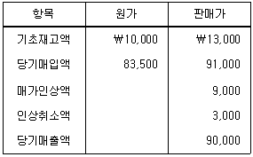
- \73,500
- \76,500
- \77,000
- \78,200
- \80,620
(정답률: 알수없음)
49. 재고자산 회계처리에 관한 설명으로 옳지 않은 것은?
- 생산에 투입하기 위해 보유하는 원재료 및 기타소모품은 제품의 원가가 순실현가능가치를 초과할 것으로 예상되더라도 감액하지 아니한다.
- 생물자산에서 수확한 농림어업 수확물로 구성된 재고자산은 공정가치에서 처분부대원가를 뺀 금액으로 수확시점에 최초 인식한다.
- 재고자산을 현재의 장소에 현재의 상태로 이르게 하는데 기여하지 않은 관리간접원가는 재고자산의 취득원가에 포함할 수 없다.
- 매입할인이나 매입금액에 대해 수령한 리베이트는 매입원가에서 차감한다.
- 개별법이 적용되지 않는 재고자산의 단위원가는 선입선출법이나 가중평균법을 사용하여 결정한다.
(정답률: 알수없음)
50. (주)감평은 재고상품에 대해 선입선줄법을 적용하여 단위원가를 결정하며, 2 0x1년 기초상품은 \30,000(단위당 원가 \1,000), 당기상품매입액은 \84,000(단위당 원가 \1,200)이다. 기말상품의 감모손실과 평가손실에 관한 자료는 다음과 같다.
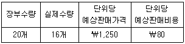
(주)감평이 기말 재고자산감모손실은 장부에 반영하였으나 재고자산평가손실을 반영하지 않았을 경우 옳은 것은?
- 20x1년 당기순이익 \1,000 과대
- 20x1년 기말재고자산 \600 과대
- 20x1년 기말자본총계 \480 과소
- 20x2년 기초재고자산 \600 과소
- 20x2년 당기순이익 \480 과소
(정답률: 알수없음)
51. 다음은 (주)감평의 20x1년도 재무제표의 일부 자료이다.
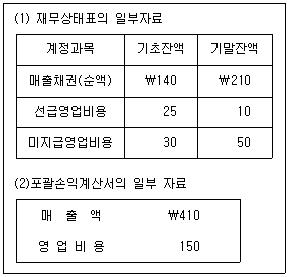
위 자료에 기초한 20x1년도 (주)감평의 (A)고객으로부터 유입된 현금흐름과 (B)영업비용으로 유출된 현금흐름은?
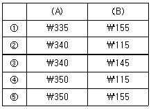
- ①
- ②
- ③
- ④
- ⑤
(정답률: 알수없음)
52. (주)감평은 20x1년 1월 1일 다음과 같은 조건의 전환사채를 액면발행하였다.
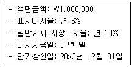
동 전환사채는 전환권을 행사하지 않을 경우 만기상환일에 액면금액의 106.49%를 일시 상환하는 조건이다. 전환청구가 없었다고 할 때, (주)감평이 동 전환사채와 관련하여 3년(20x1년 1월 1일 ~ 20x3년 12월 31일)간 인식할 이자비용 총액은? (단, 단수차이로 인한 오차가 있다면 가장 근사치를 선택한다.)
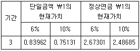
- \50,719
- \115,619
- \244,900
- \295,619
- \344,619
(정답률: 알수없음)
53. (주)감평(리스이용자)은 20x1년 1월 1일에 (주)한국리스(리스제공자)와 다음과 같은 리스계약을 체결하였다.
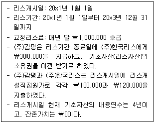
(주)감평은 사용권자산에 대해 원가모형을 적용하고 있으며 정액법으로 감가상각한다. 리스 관련 내재이자율은 알 수 없으나 (주)감평의 증분차입이자율이 연 10%라고 할 때, 상기 리스거래와 관련하여 (주)감평이 20x1년도에 인식할 비용총액은? (단, 상기 리스계약은 소액 기초자산 리스에 해당하지 않으며, 감가상각비의 자본화는 고려하지 않는다. 또한, 단수차이로 인한 오차가 있다면 가장 근사치를 선택한다.)
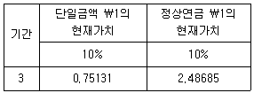
- \532,449
- \949,285
- \974,285
- \1,175,3⑤
- \1,208,638
(정답률: 알수없음)
54. 충당부채, 우발부채 및 우발자산에 관한 설명으로 옳지 않은 것은?
- 충당부채는 부채로 인식하는 반면, 우발부채는 부채로 인식하지 아니한다.
- 충당부채로 인식하는 금액은 현재의무를 보고기간 말에 이행하기 위하여 필요한 지출에 대한 최선의 추정치이어야 한다.
- 충당부채에 대한 최선의 추정치를 구할 때에는 관련된 여러 사건과 상황에 따르는 불가피한 위험과 불확실성을 고려한다.
- 예상되는 자산 처분이익은 충당부채를 생기게 한 사건과 밀접하게 관련되어 있다고 하더라도 충당부채를 측정함에 있어 고려하지 아니한다.
- 충당부채는 충당부채의 법인세효과와 그 변동을 고려하여 세후 금액으로 측정한다.
(정답률: 알수없음)
55. (주)감평은 20x1년 10월 1일에 고객과 원가 \900의 제품을 \1,200에 판매하는 계약을 체결하고 즉시 현금판매 하였다. 계약에 따르면 (주)감평은 20x2년 3월 31일에 동 제품을 \1,300에 재매입할 수 있 는 콜옵션을 보유하고 있다. 동 거래가 다음의 각 상황에서 (주)감평의 20x2년도 당기순이익에 미치는 영향은? (단, 각 상황(A, B은 독립적이고, 화폐의 시간가치는 고려하지 않으며, 이자비용(수익)은 월할계산한다.)
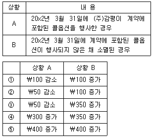
- ①
- ②
- ③
- ④
- ⑤
(정답률: 알수없음)
56. 다음은 (주)감평의 20x1년도 기초와 기말 재무상태표의 금액이다.
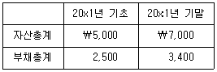
(주)감평은 20x1년 중에 \300의 유상증자와 \100의 무상증자를 각각 실시하였으며, 현금배당 \200을 지급하였다. 20x1년도 당기에 유형자산 관련 재평가잉여금이 \80만큼 증가한 경우 (주)감평의 20x1년도 포괄손익계산서 상 당기순이익은? (단, 재평가잉여금의 변동 외에 다른 기타자본요소의 변동은 없다.)
- \820
- \900
- \920
- \980
- \1,000
(정답률: 알수없음)
57. 금융상품에 관한 설명으로 옳지 않은 것은?
- 금융자산의 정형화된 매입 또는 매도는 매매일이나 결제일에 인식하거나 제거한다.
- 당기손익-공정가치 측정 금융자산이 아닌 경우 해당 금융자산의 취득과 직접 관련되는 거래원가는 최초 인식시점의 공정가치에 가산한다.
- 금융자산의 계약상 현금흐름이 재협상되거나 변경되었으나 그 금융자산이 제거되지 아니하는 경우에는 해당 금융자산의 총 장부금액을 재계산하고 변경손익을 당기손익으로 인식한다.
- 금융자산 양도의 결과로 금융자산 전체를 제거하는 경우에는 금융자산의 장부금액과 수취한 대가의 차액을 당기손익으로 인식한다.
- 최초 발생시점이나 매입할 때 신용이 손상되어 있는 상각후원가 측정 금융자산의 이자수익은 최초 인식시점부터 총 장부금액에 유효이자율을 적용하여 계산한다.
(정답률: 알수없음)
58. 고객과의 계약에서 생기는 수익에 관한 설명으로 옳지 않은 것은?
- 고객과의 계약에서 약속한 대가에 변동금액이 포함된 경우 기업은 고객에게 약속한 재화나 용역을 이전하고 그 대가로 받을 권리를 갖게 될 금액을 추정한다.
- 고객이 재화나 용역의 대가를 선급하였고 그 재화나 용역의 이전 시점이 고객의 재량에 따라 결정된다면, 기업은 거래가격을 산정할 때 화폐의 시간가치가 미치는 영향을 고려하여 약속된 대가(금액)를 조정해야 한다.
- 적절한 진행률 측정방법에는 산출법과 투입법이 포함되며, 진행률 측정방법을 적용할 때 고객에게 통제를 이전하지 않은 재화나 용역은 진행률 측정에서 제외한다.
- 고객과의 계약체결 증분원가가 회수될 것으로 예상된다면 이를 자산으로 인식한다.
- 고객이 기업이 수행하는 대로 기업의 수행에서 제공하는 효익을 동시에 얻고 소비한다면, 기업은 재화나 용역에 대한 통제를 기간에 걸쳐 이전하는 것이므로 기간에 걸쳐 수익을 인식한다.
(정답률: 알수없음)
59. 20x1년 초에 사업을 개시한 (주)감평의 회계담당자는 20x1년 말에 정기예금에 대한 미수이자 \200을 계상하지 않은 오류를 발견하였다. (주)감평의 당기 및 차기 이후 적용법인 세율이 모두 30%일 때 이러한 회계처리 오류가 (주)감평의 20x1년도 재무제표에 미친 영향으로 옳은 것은? (단, 세법상 정기예금 이자는 이자수령시점에 과세된다. 또한, (주)감평은 이연법인세 회계를 적용하고 있으며, 미래에 충분한 과세소득이 발생할 것으로 판단된다.)
- 당기법인세자산이 \60 과대계상 되었다.
- 당기법인세부채가 \60 과소계상 되었다.
- 법인세비용이 \60 과대계상 되었다.
- 당기순이익이 \140 과소계상 되었다.
- 이연법인세자산이 \60 과소계상 되었다.
(정답률: 알수없음)
60. (주)감평은 20x1년 1월 1일에 액면금액 \500,000(표시이자율 연 10%, 만기 3년, 매년 말 이자 지급)의 사채를 \475,982에 취득하고, 당기손익-공정가치 측정 금융자산으로 분류하였다. 동 사채의 취득 당시 유효이자율은 연 12%이며, 20x1년 말 공정가치는 \510,000이다. 상기 금융자산(사채) 관련 회계처리가 (주)감평의 20x1년도 당기순이익에 미치는 영향은? (단, 단수 차이로 인한 오차가 있다면 가장 근사치를 선택한다.)
- \84,018 증가
- \70,000 증가
- \60,000 증가
- \34,018 증가
- \10,000 증가
(정답률: 알수없음)
61. (주)감평은 특정차입금 없이 일반차입금을 사용하여 건물을 신축하였다. 건물은 차입원가 자본화 대상인 적격자산이다. 신축 건물과 관련한 자료가 다음과 같을 경우, 20x1년도에 자본화할 차입원가(A)와 20x2년도에 자본화할 차입원가(B)는? (단, 계산시 월할 계산하며, 전기에 자본화한 차입원가는 적격자산의 연평균 지출액 계산 시 포함하지 않는다.)
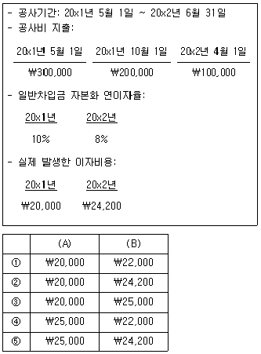
- ①
- ②
- ③
- ④
- ⑤
(정답률: 알수없음)
62. (주)감평의 20x1년 초 유통보통주식수는 1,600주(주당 액면금액 \100)이며 20x1년 7월 1일 기존주주를 대상으로 보통주 600주를 발행하는 유상증자를 실시하였다. 주당 발행가액은 \400이며 유상증자 직전 주당 공정가치는 \600이었다. 기본주당이익 계산을 위한 가중평균유통보통주식수는? (단, 유상증자대금은 20x1년 7월 1일 전액 납입완료 되었으며, 유통보통주식수는 월할계산한다.)
- 1,600주
- 1,760주
- 1,800주
- 1,980주
- 2,200주
(정답률: 알수없음)
63. (주)감평은 20x1년 초 부여일로부터 3년의 용역제공을 조건으로 직원 50명에게 각각 주식선택권 10개를 부여하였다. 부여일 현재 주식선택권의 단위당 공정가치는 \1,000으로 추정되었으며, 매년 말 추정한 주식선택권의 공정가치는 다음과 같다.
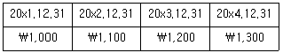
주식선택 권 1개당 1주의 주식을 부여받을 수 있으며 권리가득일로부터 3년간 행사가 가능하다. (주)감평은 20x1년 말과 20x2년 말에 가득기간 중 직원의 퇴사율을 각각 25%와 28%로 추정하였으며, 20x1년도와 20x2년도에 실제로 퇴사한 직원은 각각 10명과 2명이다. 20x3년 말 주식선택권을 가득한 직원은 총 35명이다. 20x4년 1월 1일 주식선택권을 가득한 종업원 중 60%가 본인의 주식선택권 전량을 행사하였을 경우 이로 인한 (주)감평의 자본 증가액은? (단, (주)감평 주식의 주당 액면금액은 \5,000이고 주식선택권의 개당 행사가격은 \6,000이다.)
- \210,000
- \420,000
- \1,⑤0,000
- \1,260,000
- \1,470,000
(정답률: 알수없음)
64. 퇴직급여제도에 관한 설명으로 옳지 않은 것은?
- 확정기여제도에서는 종업원이 보험수리적위험(급여가 예상에 미치지 못할 위험)과 투자위험(투자자산이 예상급여액을 지급하는데 충분하지 못할 위험)을 실질적으로 부담한다.
- 확정기여제도에서는 기여금의 전부나 일부의 납입기일이 종업원이 관련 근무용역을 제공하는 연차보고기간 말 후 12개월이 되기 전에 모두 결제될 것으로 예상되지 않는 경우를 제외하고는 할인되지 않은 금액으로 채무를 측정한다.
- 확정급여채무의 현재가치와 당기근무원가를 결정하기 위해서는 예측단위적립방식을 사용하며, 적용할 수 있다면 과거근무원가를 결정할 때에도 동일한 방식을 사용한다.
- 확정급여제도에서 기업이 보험수리적위험(실제급여액이 예상급여액을 초과할 위험)과 투자위험을 실질적으로 부담하며, 보험수리적 실적이나 투자실적이 예상보다 저조하다면 기업의 의무가 늘어날 수 있다.
- 퇴직급여채무를 할인하기 위해 사용하는 할인율은 보고기간 말 현재 그 통화로 표시된 국공채의 시장수익률을 참조하여 결정하고, 국공채의 시장수익률이 없는 경우에는 보고기간 말 현재 우량회사채의 시장수익률을 사용한다.
(정답률: 알수없음)
65. (주)감평은 20x1년 1월 1일 사용목적으로 \5,000에 건물(내용연수 5년, 잔존가치 \0, 정액법 감가상각)을 취득하고 재평가모형을 적용하고 있다. 건물을 사용함에 따라 재평가잉여금 중 일부를 이익잉여금으로 대체하고, 건물 처분 시 재평가잉여금 잔액을 모두 이익잉여금으로 대체하는 정책을 채택하고 있다. 20x2년 말 건물에 대한 공정가치는 \6,000이다. (주)감평이 20x5년 1월 1일 동 건물을 처분할 때, 재평가잉여금 중 이익잉여금으로 대체되는 금액은?
- \0
- \400
- \500
- \800
- \1,000
(정답률: 알수없음)
66. 무형자산의 회계처리에 관한 설명으로 옳지 않은 것은?
- 무형자산의 잔존가치는 해당 자산의 장부금액과 같거나 큰 금액으로 증가할 수도 있다.
- 브랜드, 제호, 출판표제, 고객목록, 그리고 이와 실질이 유사한 항목(외부에서 취득하였는지 또는 내부적으로 창출하였는지에 관계없이)에 대한 취득이나 완성 후의 지출은 발생시점에 항상 당기손익으로 인식한다.
- 무형자산의 상각방법은 자산의 경제적 효익이 소비될 것으로 예상되는 형태를 반영한 방법이어야 하지만, 그 형태를 신뢰성 있게 결정할 수 없는 경우에는 정액법을 사용한다.
- 내용연수가 비한정적인 무형자산은 상각하지 않고, 무형자산의 손상을 시사하는 징후가 있을 경우에 한하여 손상검사를 수행한다.
- 내부적으로 창출한 브랜드, 제호, 출판표제, 고객목록과 이와 실질이 유사한 항목은 무형자산으로 인식하지 아니한다.
(정답률: 알수없음)
67. (주)감평은 20x1년 9월 1일 미국에 있는 토지(유형자산)를 $5,000에 취득하고 원가모형을 적용하고 있다. 20x1년 12월 31일 현재 토지의 공정가치는 $5,100이며, 20x2년 2월 1일 토지 중 30%를 $1,550에 처분하였다. 일자별 환율이 다음과 같을 때, 처분손익은? (단, (주)감평의 기능통화는 원화이다.)
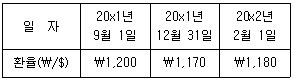
- 손실 \29,000
- 손실 \38,900
- \0
- 이익 \29,000
- 이익 \38,900
(정답률: 알수없음)
68. (주)감평은 20x1년 초 \20,000에 기계장치(내용연수 5년, 잔존가치 \0 , 정액법감가상각)를 취득하여 사용하고 있다. (주)감평은 동 기계장치에 대해 취득연도부터 재평가 모형을 적용하고 있으며, 처분부대원가가 무시할 수 없을 정도로 상당하여 손상회계를 적용하고 있다. 공정가치와 회수가능액이 다음과 같을 경우, 20x2년도에 인식할 손상차손 또는 손상차손환입액은? (단, 기계장치를 사용함에 따라 재평가잉여금의 일부를 이익잉여금으로 대체하지 않는다.)(문제 오류로 확정답안 발표시 2, 3번이 정답처리 되었습니다. 여기서는 2번을 누르시면 정답 처리 됩니다.)
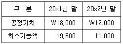
- \0
- 손상차손 \500
- 손상차손 \1,000
- 손상차손환입 \500
- 손상차손환입 \1,000
(정답률: 알수없음)
69. (주)감평은 확정급여제도를 운영하고 있으며, 20x1년도 관련 자료는 다음과 같다. 20x1년도 기타포괄손익으로 인식할 확정급여채무의 재측정요소는?
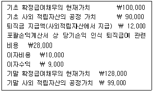
- 재측정손실 \2,000
- 재측정손실 \3,000
- 재측정손익 없음
- 재측정이익 \2,000
- 재측정이익 \3,000
(정답률: 알수없음)
70. 매각예정으로 분류된 비유동자산 또는 처분자산집단에 관한 설명으로 옳은 것은?
- 매각예정으로 분류하였으나 중단영업의 정의를 충족하지 않는 비유동자산(또는 처분자산집단)을 재측정하여 인식하는 평가손익은 계속영업손익에 포함한다.
- 소유주에 대한 분배예정으로 분류된 비유동자산(또는 처분자산집단)은 공정가치와 장부금액 중 작은 금액으로 측정한다.
- 비유동자산이 매각예정으로 분류되거나 매각예정으로 분류된 처분자산집단의 일부이더라도 그 자산은 감가상각 또는 상각을 중단하지 아니한다.
- 매각예정으로 분류된 비유동자산(또는 처분자산집단)은 공정가치와 장부금액 중 큰 금액으로 측정한다.
- 매각예정으로 분류된 처분자산집단의 부채와 관련된 이자와 기타 비용은 인식을 중단한다.
(정답률: 알수없음)
71. (주)감평은 동일 공정에서 결합제품 A와 B를 생산하여 추가로 원가(A : \40, B：\60)를 각각 투입하여 가공한 후 판매하였다. 순실현가치법을 사용하여 결합원가 \120을 배분하면 제품 A의 총제조원가는 \70이며, 매출총이익률은 30%이다. 제품 B의 매출총이익률은?
- 27.5%
- 30%
- 32.5%
- 35%
- 37.5%
(정답률: 알수없음)
72. 원가에 관한 설명으로 옳지 않은 것은?
- 가공원가(전환원가)는 직접노무원가와 제조간접원가를 합한 금액이다.
- 연간 발생할 것으로 기대되는 총변동원가는 관련범위 내에서 일정하다.
- 당기제품제조원가는 당기에 완성되어 제품으로 대체된 완성품의 제조원가이다.
- 기초고정원가는 현재의 조업도 수준을 유지하는데 기본적으로 발생하는 고정원가이다.
- 회피가능원가는 특정한 의사결정에 의하여 원가의 발생을 회피할 수 있는 원가로서 의사결정과 관련있는 원가이다.
(정답률: 알수없음)
73. (주)감평은 20x1년 3월 제품 A(단위당 판매가격 \800) 1,000단위를 생산 • 판매하였다. 3월의 단위당 변동원가는 \500이고, 총고정원가는 \250,000이 발생하였다. 4월에는 광고비 \15,000을 추가 지출하면 \50,000의 매출이 증가할 것으로 기대하고 있다. 이를 실행할 경우 (주)감평의 4월 영업이익에 미치는 영향은? (단, 단위당 판매가격, 단위당 변동원가, 광고비를 제외한 총고정원가는 3월과 동일하다.)
- \3,750 감소
- \3,750 증가
- \15,000 감소
- \15,000 증가
- \35,000 증가
(정답률: 알수없음)
74. (주)감평은 두개의 제조부문 X, Y와 두 개의 보조부문 S1, S2를 운영하고 있으며, 배부 전 부문발생원가는 다음과 같다.
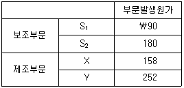
보조부문 S1은 보조부문 S2에 0.5, 제조부문표에 0.3, 보조부문 S2는 보조부문 S1에 0.2의 용역을 제공하고 있다. 보조부문의 원가를 상호배분법에 의해 제조부문에 배부한 후 제조부문표의 원가가 \275인 경우, 보조부문 S2가 제조부문 X에 제공한 용역제공비율은?
- 0.2
- 0.3
- 0.4
- 0.5
- 0.6
(정답률: 알수없음)
75. (주)감평의 20x1년 제품 A의 생산 • 판매와 관련된 자료는 다음과 같다.
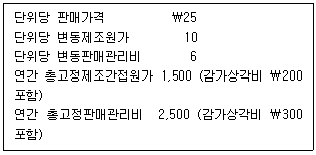
(주)감평은 변동원가계산을 채택하고 있으며, 감가상각비를 제외한 모든 수익과 비용은 발생 시점에 현금으로 유입되고 지출된다. 법인세율이 20%일 때 (주)감평의 세후현금흐름분기점 판매량은?
- 180단위
- 195단위
- 360단위
- 375단위
- 390단위
(정답률: 알수없음)
76. 제품 A와 B를 생산·판매하고 있는 (주)감평의 20x1년 제조간접원가를 활동별로 추적한 자료는 다음과 같다.
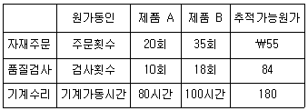
제조간접원가를 활동기준으로 배부하였을 경우 제품 A와 B에 배부될 원가는?
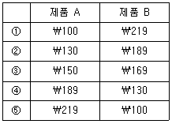
- ①
- ②
- ③
- ④
- ⑤
(정답률: 알수없음)
77. 다음은 (주)감평의 20x1년 상반기 종합예산을 작성하기 위한 자료의 일부이다. 4월의 원재료 구입예산액은?
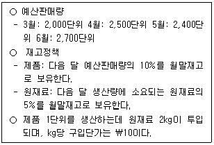
- \49,740
- \49,800
- \49,860
- \52,230
- \52,290
(정답률: 알수없음)
78. 다음은 제품 A를 생산 • 판매하는 (주)감평의 당기 전부원가 손익계산서와 공헌이익 손익계산서이다.
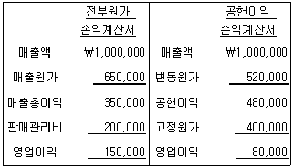
제품의 단위당 판매가격 \1,000, 총고정판매관리비가 \50,000일 때 전부원가계산에 의한 기말제품재고는? (단, 기초 및 기말 재공품, 기초제품은 없다.)
- \85,000
- \106,250
- \162,500
- \170,000
- \212,500
(정답률: 알수없음)
79. 다음은 종합원가계산제도를 채택하고 있는 (주)감평의 당기 제조활동에 관한 자료이다.
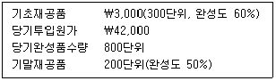
모든원가는 공정 전체를 통하여 균등하게 발생하며, 기말재공품의 평가는 평균법을 사용하고 있다. 기말재공품원가는? (단, 공손 및 감손은 없다.)
- \4,200
- \4,500
- \5,000
- \8,400
- \9,000
(정답률: 알수없음)
80. (주)감평은 표준원가계산제도를 채택하고 있으며, 20x1년도 직접노무원가와 관련된 자료는 다음과 같다. 20x1년도 실제 총직접노무원가는?
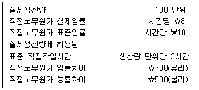
- \1,800
- \2,500
- \2,800
- \3,500
- \4,200
(정답률: 알수없음)
해설: 국토의 계획 및 이용에 관한 법령상 국토교통부장관이 도시 • 군관리계획의 수립 기준을 정할 때 고려하여야 하는 사항은 다양하다. 이 중에서도 "공간구조는 생활권단위로 적정하게 구분하고 생활 • 편익시설이 고루 갖추어지도록 할 것", "녹지축 • 생태계 • 산림 • 경관 등 양호한 자연환경과 우량농지, 문화재 및 역사문화환경 등을 고려하여 토지이용계획을 수립하도록 할 것", "도시의 개발 또는 기반시설의 설치 등이 환경에 미치는 영향을 미리 검토하는 등 계획과 환경의 유기적 연관성을 높여 건전하고 지속가능한 도시발전을 도모하도록 할 것", "광역계획권의 미래상과 이를 실현할 수 있는 체계화된 전략을 제시하고 국토종합계획등과 서로 연계되도록 할 것" 등이 있다. 이 중에서도 "수도권안의 인구집중유발시설이 수도권외의 지역으로 이전하는 경우 종전의 대지에 대하여는 그 시설의 지방이전이 촉진될 수 있도록 토지이용계획을 수립하도록 할 것"은 국토의 계획 및 이용에 관한 법령상 국토교통부장관이 도시 • 군관리계획의 수립 기준을 정할 때 고려하여야 하는 사항이 아니다. 이유는 수도권안의 인구집중유발시설이 수도권외의 지역으로 이전하는 경우 종전의 대지에 대하여는 그 시설의 지방이전이 촉진될 수 있도록 토지이용계획을 수립하는 것은 지방자치단체의 역할이기 때문이다.